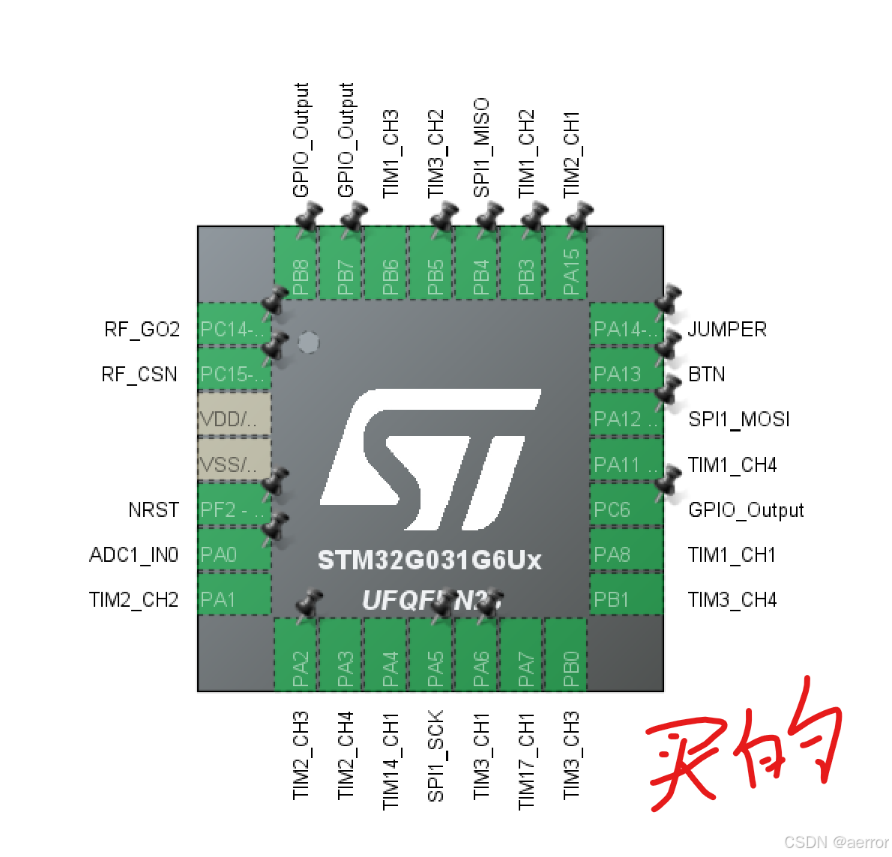
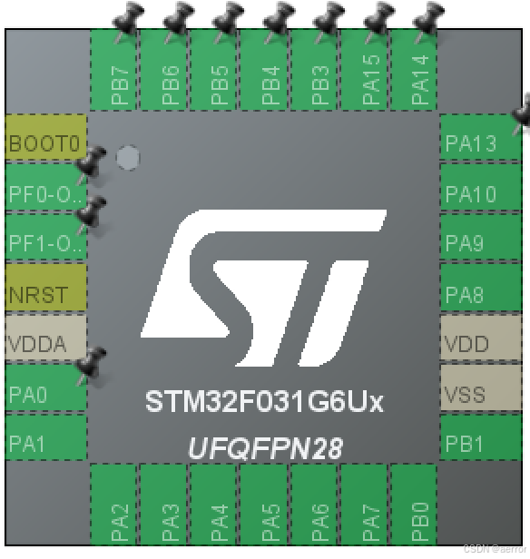

要问我怎么知道的？我来告诉你。
１．EDA选了STM32F031G6，画图，４层板，画得我眼都花了，
２．沉金打样，等了一个星期
３．买了STM32G031G6，早早收货货就等板子了
４．终于等到，开工贴双面，眼又花了，花了数个小时
５. 基本检查一下电路，看起来没有短路，焊点都焊得挺好。
６．焊好stlink 准备刷固件
７．发现没有反应，以来没有焊好，补焊一轮，检查连通性，无果
８．可能有其它线路影响了？决定焊第二张，就留ｍｃｕ最简线路，又是一样，没有反应
９．难道ｍｃｕ坏的，焊第三张样板，就留ｍｃｕ最简线路，又是一样，没有反应
10. 见鬼了？没有道理啊，查文档，对针针脚，查了STM32F031G6的。完全没有问题哇！！！
11. 好吧，太晚了，都要三点了，睡觉。。。。
12. 睡醒了。。。百思不得其解，我不信，再来一张。。。又是一样，没有反应
13. 这。。。
14. 我又看了一眼电路原理图，看了一下mcu上的丝标，呃。。。
15. 买的是STM32G031G6，画图画的是STM32F031G6。
16.是的，就是差一字母，中间那一个，封装也是一样。


立贴记录，以免再犯